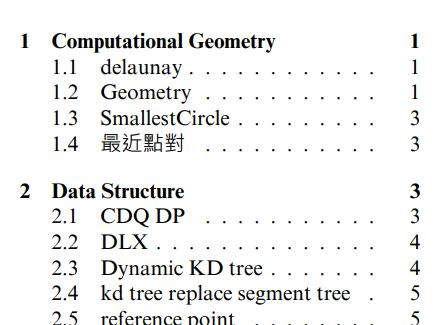

Codebook 製作
ICPC 以及台灣的各大競技程式比賽，經常允許攜帶 20 到 25 頁 A4 大小的紙本作為參考資料。大學以後的競賽使用的演算法種類繁多，其中不少非常複雜以至於人腦難以記憶，因此大多數的隊伍會將這些演算法記錄在參考資料中，而有 codebook 之名。
有些比賽要求 codebook 的每一頁都要標上頁碼以及學校名稱，以及字體大小要在 50 公分外正常視力範圍的人能夠辨識出內容。為了最佳化 codebook 的文字量，本校隊伍 Jinkela (退休前改名 Angry Crow Takes Flight!) 製作了簡易的 codebook 生成器，提供給本校學生做為參考。
1. 下載以及編譯
要使用 Jinkela codebook，請先下載或是 clone Codebook 這個 repository。
Jinkela codebook 的特點在於無論是 Windows 以及 Linux 環境都能使用，所有的操作都可以在該系統的命令列介面中完成。首先確認自己的電腦有安裝 python3 以及 xelatex，盡量將兩個套件都安裝到最新的版本，xelatex 由於是比較少見的套件，可以參考 README.md 中的資訊安裝。
接著打開命列列介面進入 Codebook 的路徑，將 Codebook.pdf 刪除後，執行以下指令進行編譯：
python build.py
執行結束後，如果編譯成功會產生一個新的 Codebook.pdf，請檢察內容是否正常，如果完全沒有問題就可以進行下一步，否則請將出現的問題透過 issues 告訴我們。
2. Codebook.pdf 內容
Codebook.pdf 是最終產生的參考資料，按照順序可以分成 3 個部分：
- 程式碼以及數學公式
該部分從第一頁開始，到目錄頁結束，佔據了檔案中的絕大部分 - 目錄頁
該部分通常只有一頁，為 程式碼以及數學公式 的目錄 - 測機用程式碼
有些比賽在正式開始前有個測試執行環境的時間，而且通常不會限制攜帶的參考資料數量，因此可以多帶一份專門測試用的程式碼。當前該部分是本校競技程式設計課程所教授的內容，可以自行研究使用方式。
3. 合法的檔案結構
Codebook 的路徑下有三個資料夾：codes、fonts、judge-test。其中 fonts 存放的是會用到的字體，而 judge-test 中放的是測機用程式碼，會在下一節介紹。這兩個資料夾理論上不會有任何修改，本小節的重點會放在 codes 資料夾中。

codes 資料夾中存放了所有想要被放進 codebook 中的程式碼以及數學公式，目前支援的格式有：.cpp、.py 以及 .tex。所有檔案都支援中英文的使用，若想要支援其他程式語言請自行學習 latex 語法來完成。
codes 資料夾透過其中的子資料夾名稱對檔案進行分類，子資料夾最多只能有一層，而且所有檔案都要放在子資料夾中。舉例來說，以下為 codes 其中兩個子資料夾的結構：
codes
├── Computational Geometry
│ ├── Geometry.cpp
│ ├── SmallestCircle.cpp
│ ├── delaunay.cpp
│ └── 最近點對.cpp
└── Data Structure
├── CDQ_DP.cpp
├── DLX.cpp
├── Dynamic_KD_tree.cpp
├── kd_tree_replace_segment_tree.cpp
├── reference_point.cpp
├── skew_heap.cpp
├── undo_disjoint_set.cpp
└── 整體二分.cpp
可以在生成出來的 Codebook.pdf 中的目錄頁找到以下的結構：

透過這個規則，使用者可以自行增減 codes 資料夾中的任何資料已完成自己想要的 codebook。
4. 設定每頁顯示的欄數、橫版或直版顯示
Jinkela codebook 的另一大特點是可以自由設定每頁顯示的欄數、以及要橫版或直版顯示。想要做到這些設定，請打開 Codebook-setup.tex，並在其中找到以下幾行的參數設定：
\setboolean{UsingGeometryLandscape}{true} % 是否使用橫版頁面
\newcommand{\NumberOfColumn}{4} % 每頁有幾欄
\newcommand{\UniversityName}{National Tsing Hua University} % 學校名稱
\newcommand{\TeamName}{Angry Crow Takes Flight!} % 隊名
接著來介紹每個參數的作用：
UsingGeometryLandscape
Jinkela codebook 使用 geometry landscape 來產生橫版頁面。該參數預設是 true，若將其調成 false 就會使用直版頁面。
\setboolean{UsingGeometryLandscape}{true} % 使用橫版頁面
\setboolean{UsingGeometryLandscape}{false} % 使用直版頁面
NumberOfColumn
表示每頁有幾欄。一般來說橫版頁面會使用 4 欄或是 3 欄，直版頁面會使用 3 欄或 2 欄。該參數預設是 4，但實際上要達到最佳的程式碼壓縮量，建議使用直版頁面、每頁有 3 欄的樣式。
\newcommand{\NumberOfColumn}{3} % 每頁有 3 欄
學校名稱以及隊伍名稱
這個應該最簡單，直接按需求填寫就行了，中英文皆可 (或許其他語言也能正常使用)。
\newcommand{\UniversityName}{National Tsing Hua University} % 學校名稱
\newcommand{\TeamName}{Angry Crow Takes Flight!} % 隊名